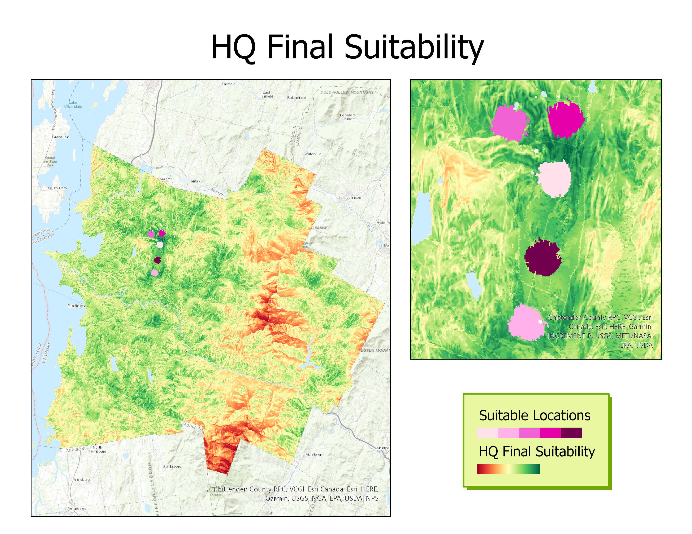

Suitability modeling was used to locate the best location for a Vermont company's carbon-neutral headquarters. This study area covers several counties in Vermont, including Burlington, Hinesburg, and Stowe. In the eastern part of the study area, you’ll find the Green Mountains running north to south.
Criteria Table
| Criteria | Required data | Derived criteria layer name |
|---|---|---|
| Wetlands and high-density areas are less preferred | Land-use layer | LandUse |
| Steep slopes are less preferred | Elevation layer | Slope |
| Closer to major roads is preferred | Distance from major roads layer | Dist_MRoads |
| Visibility from major roads is less preferred | Viewshed layer | Views |
| Closer to electric lines (to connect solar energy to the utility grid) is preferred | Electric distributions layer | Dist_Elect |
| Closer to recreational areas is preferred | Recreation layer | Dist_Rec |
| Farther from protected areas is preferred | Protected areas layer | Dist_Protect |
| Farther from wetlands is preferred | Wetlands layer | Dist_Wetlands |
| Farther from biological areas is preferred | Biological areas layer | Dist_Biol |
Workflow Steps
- Identify the criteria (see above)
- Used the Surface Parameters geoprocessing tool to derive a slope layer from the elevation base dataset
- Used the Distance Accumulation geoprocessing tool to derive the Euclidean distance from the major roads
- Created a submodel within the Suitability Modeler for the building site objective
- Built a query to identify restricted locations within the study area
- Transformed land use categorical values to a common scale in order to weigh these criteria relative to each other
- Transformed continuous criteria, such as slope, for the submodel. The resulting Transformed Slope layer is set to a common preference scale ranging from 1 to 10, where 1 is not preferable and 10 is very preferable. The most preferred areas are in green and the least preferred areas are in red. The same was performed for the Dist_MRoads and Views_Zero layers
- Weighted the criteria relative to one another before combining them using the multiplier method
- Combined four submodels
- Used the full-resolution suitability map to identify the best location for the headquarters using specified spatial requirements
- Analyzed the results by visually confirming that the sites meet the required criteria
- © Untitled
- Design: HTML5 UP